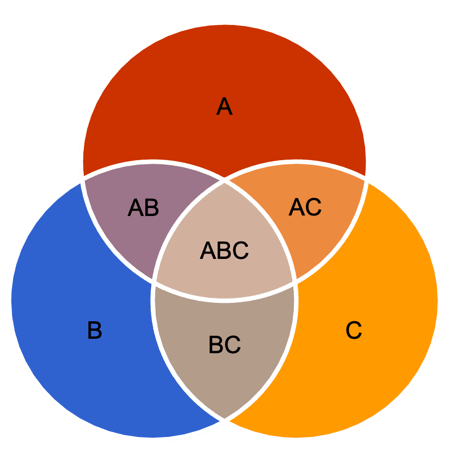
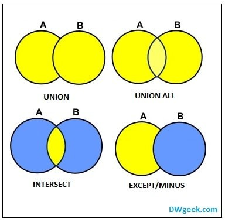

Vimos diversas formas de realizar consultas mais complexas em SQL:
Veremos outras técnicas que vão nos permitir implementar algoritmos razoavelmente complexos usando SQL.
Vamos pensar em uma rede social. Ela possui diversos algoritmos para calcular coisas como:
👥
Amigos em comum
Mostrar amigos ou pessoas seguidas em comum entre mim e outro usuário
🤝
Sugestão de amigos
Sugerir pessoas para seguir com base em interesses em comum
Desafio: Como fazer isso tudo usando apenas SQL?
Mostrar amigos/pessoas seguidas em comum entre eu (id = 1) e outra pessoa (id = 2).
Dá para fazer isso com o que aprendemos?
Mostrar amigos/pessoas seguidas em comum entre eu (id = 1) e outra pessoa (id = 2).
Reconhecem?
Será que dá para fazer isso com o que já aprendemos?
Sim!
Vamos revisar os tipos de JOIN e ver como eles se relacionam com a teoria de conjuntos.
É o padrão se usarmos só JOIN. Retorna apenas os registros que ocorrem nas duas tabelas.
Somente usuários que têm post
Retorna somente usuários que têm post.
Retorna todos os registros da tabela da esquerda, mesmo que não haja correspondência na da direita.
Todos os usuários, mesmo que não tenha post
Retorna todos os usuários. Se não tiver post, titulo virá NULL.
Como obter apenas os registros que estão em A mas NÃO estão em B?
Apenas usuários que não têm post
O truque está no WHERE B.id_usuario IS NULL. Filtramos apenas onde não houve correspondência em B.
Quero descobrir:
Posts que têm comentário OU likes (ou ambos).
Posts que têm apenas comentários sem likes.
Posts que ou têm apenas comentário OU têm apenas like (exclusivo).
Alternativa aos JOINs para operações de conjunto entre resultados de consultas.

Observação: Não funciona com JOIN se queremos resgatar apenas a chave, pois o JOIN traria colunas de ambas as tabelas.
Pergunta: quais usuários (id) têm post?
Mesma pergunta, mais clara!
Quais usuários (id) não têm post?
Mesma pergunta, mais direta!
Baseado no que aprendeu, faça as questões iniciais usando JOIN e usando operadores de conjunto:
Dica: Tente resolver de duas formas — com JOINs e com operadores de conjunto — e compare a clareza de cada uma!
Prof. Caio Hamamura
Próxima aula: novos tópicos de SQL